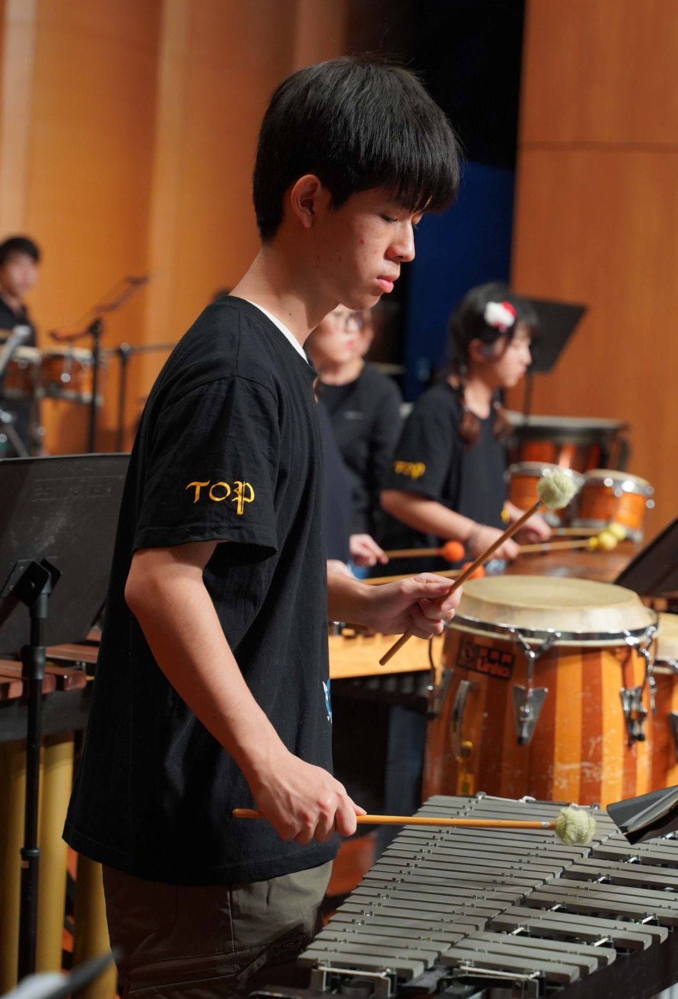
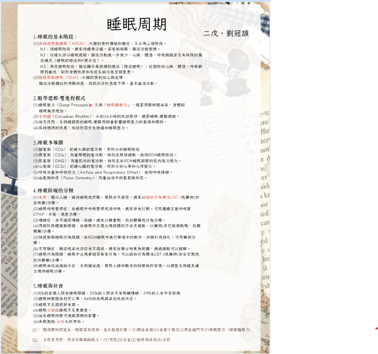
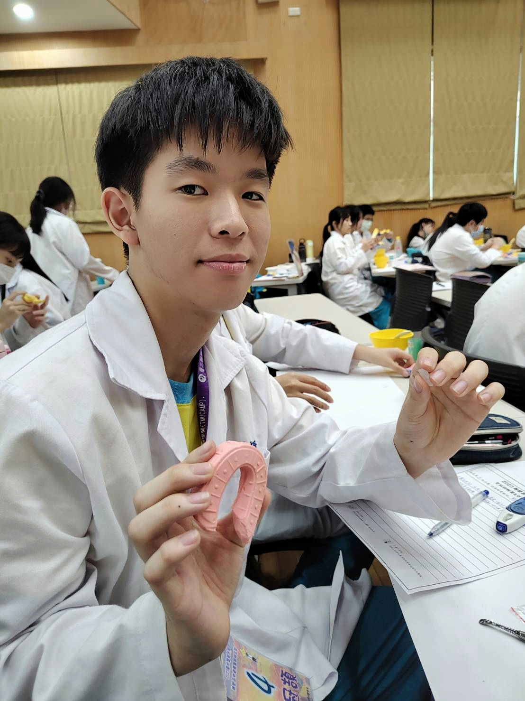
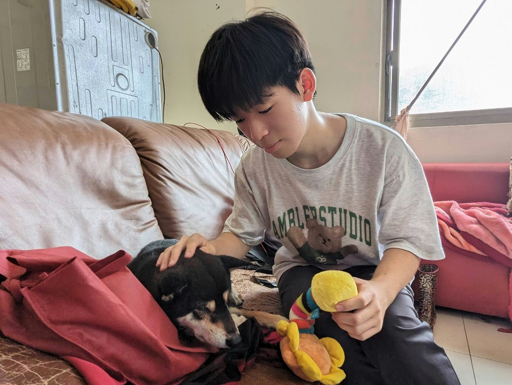

薇閣中學資優班 | 跨領域探索與卓越身心素質
我是劉冠頡，目前就讀於薇閣中學資優班。我對醫學與科學充滿熱忱，曾獲化學奧賽全國銅牌。 我深信優秀的醫者需具備**「理性的頭腦」**、**「感性的心靈」**以及**「堅韌的體魄」**。 工作之餘，我沉浸於歷史故事的縱深與跨國旅行見識風土民情，培養廣闊的國際視野。 長達十年的打擊樂訓練與排球運動，更塑造了我極佳的專注力、耐壓性與團隊高度協作能力。

長期的藝術訓練培養了我的節奏感與高壓下的冷見。在樂團合奏中，我學會了精準配合他人。
球場上的瞬息萬變磨練了我的反應速度與高度耐壓性。這讓我深刻明白醫療團隊中各司其職、無間合作的重要性。

睡眠生理機制研究海報發表
我針對睡眠的生理機制進行了系統性的探究，包含生理時鐘（晝夜節律）的運作原理、不同睡眠階段（NREM/REM）的神經電生理特徵，以及睡眠不足對神經元功能與認知表現的長期影響。透過數據整合與海報呈現，我加深了對神經科學的認識，並訓練了自主探究與跨領域資訊整合的能力。

台北醫學大學研習營
在北醫研習營中，我不僅學習了牙體形態學與口腔醫學概論，更親手進行了齒模製作（印模、倒模）與石膏雕刻。 這次實作經驗磨練了我對細節的敏銳度、高強度的專注力以及精細的手眼協調能力，確認了自己對精密操作的濃厚興趣。
完成兩學期深度培訓
提前接軌大學研究視角，培訓嚴謹實驗態度與數據處理能力。

流浪動物之家義工服務中
透過第一線的觀察與服務，我體會到醫療者應具備的社會責任與人文溫度：
觀察基層醫療體系的日常運作與公衛宣導。
學習與長者互動溝通，體察高齡社會的情感需求。
服務弱勢生命，培養對生命的敬畏感與責任感。